<title>What can Doddy do? Mockups</title>
<meta name="description" content="Three design directions and twelve mockups for a new doddy.lol page, with a recommendation. Proposal, nothing live.">
<link rel="preconnect" href="https://fonts.googleapis.com">
<link rel="preconnect" href="https://fonts.gstatic.com" crossorigin>
<link rel="stylesheet" href="https://fonts.googleapis.com/css2?family=Bricolage+Grotesque:opsz,wght@12..96,500..800&family=Caveat:wght@700&display=swap">
<style>
  /* Layout: one reading column for words, full-width shelves for the renders. Paper by day, ink by night, in the site's own tokens. */
  :root {
    --bg: #FFF7E9; --paper: #FFFCF7; --ink: #171715; --muted: #655F56; --rule: #DFD5C6; --quiet: #F5EAD8;
    --orange: #F58A24; --accent: #A64B00; --good: #326746;
    --display: "Bricolage Grotesque", "Avenir Next", "Segoe UI", system-ui, sans-serif;
    --hand: "Caveat", "Bradley Hand", "Segoe Print", cursive;
    --text: -apple-system, BlinkMacSystemFont, "SF Pro Text", system-ui, "Segoe UI", Roboto, sans-serif;
  }
  @media (prefers-color-scheme: dark) {
    :root:not([data-theme="light"]) { --bg: #1B1A17; --paper: #24221E; --ink: #F3EDE2; --muted: #B5AC9E; --rule: #3C382F; --quiet: #2C2923; --orange: #F58A24; --accent: #F0A35C; --good: #7FBF95; color-scheme: dark; }
  }
  :root[data-theme="dark"] { --bg: #1B1A17; --paper: #24221E; --ink: #F3EDE2; --muted: #B5AC9E; --rule: #3C382F; --quiet: #2C2923; --orange: #F58A24; --accent: #F0A35C; --good: #7FBF95; color-scheme: dark; }
  * { box-sizing: border-box; }
  body { margin: 0; background: var(--bg); color: var(--ink); font: 400 1.0625rem/1.6 var(--text); padding-block: 0 64px; }
  .wrap { max-width: 1180px; margin: 0 auto; padding-inline: clamp(16px, 4vw, 40px); }
  .prose { max-width: 66ch; }
  h1, h2, h3 { font-family: var(--display); letter-spacing: -0.02em; text-wrap: balance; line-height: 1.05; }
  h1 { font-size: clamp(2.4rem, 1.6rem + 3.4vw, 4.4rem); font-weight: 760; margin: 0 0 16px; }
  h2 { font-size: clamp(1.7rem, 1.3rem + 1.4vw, 2.4rem); font-weight: 750; margin: 0 0 10px; }
  h3 { font-size: 1.2rem; font-weight: 700; margin: 0 0 6px; }
  p { margin: 0 0 14px; }
  .muted { color: var(--muted); }
  .hand { font-family: var(--hand); font-weight: 700; color: var(--accent); font-size: 1.15em; }
  header.top { padding-block: clamp(40px, 7vw, 80px) 24px; border-bottom: 1px solid var(--rule); background: repeating-linear-gradient(to bottom, transparent 0 35px, color-mix(in srgb, var(--rule) 60%, transparent) 35px 36px); }
  .pill { display: inline-flex; align-items: center; gap: 8px; padding: 5px 14px 6px; border: 1px solid var(--rule); border-radius: 999px; background: color-mix(in srgb, var(--quiet) 70%, transparent); font-size: 0.875rem; font-weight: 600; color: var(--muted); margin: 0 0 18px; }
  .pill::before { content: ""; width: 8px; height: 8px; border-radius: 50%; background: var(--orange); }
  section { padding-block: clamp(32px, 5vw, 56px); border-bottom: 1px solid var(--rule); }
  .eyebrow { font-size: 0.8125rem; font-weight: 650; letter-spacing: 0.04em; text-transform: uppercase; color: var(--muted); margin: 0 0 8px; }
  .shelf { display: grid; gap: 24px; margin-top: 22px; }
  .shelf.two { grid-template-columns: repeat(2, minmax(0, 1fr)); }
  .shelf.three { grid-template-columns: repeat(3, minmax(0, 1fr)); }
  .shelf.phones { grid-template-columns: repeat(auto-fit, minmax(220px, 280px)); }
  @media (max-width: 760px) { .shelf.two, .shelf.three { grid-template-columns: minmax(0, 1fr); } }
  figure { margin: 0; min-width: 0; }
  figure img { display: block; width: 100%; max-width: 100%; height: auto; border: 1px solid var(--rule); border-radius: 14px; background: var(--paper); box-shadow: 0 2px 4px rgb(60 40 10 / 8%), 0 40px 80px -32px rgb(60 40 10 / 40%); }
  figure.tall { max-height: 820px; overflow-y: auto; border-radius: 14px; border: 1px solid var(--rule); }
  figure.tall img { border: 0; border-radius: 0; box-shadow: none; }
  figcaption { font-size: 0.875rem; color: var(--muted); margin: 10px 2px 0; }
  figcaption b { color: var(--ink); font-family: var(--display); font-weight: 700; }
  .verdict { display: grid; gap: 14px 32px; padding: clamp(22px, 4vw, 36px); background: var(--paper); border: 1px solid var(--rule); border-radius: 28px; margin-top: 24px; }
  @media (min-width: 860px) { .verdict { grid-template-columns: minmax(0, 1fr) minmax(0, 1fr); } }
  .verdict ul { margin: 0; padding-left: 20px; }
  .verdict li { margin: 0 0 8px; }
  table { width: 100%; border-collapse: collapse; font-size: 0.9375rem; margin-top: 18px; }
  th, td { text-align: left; vertical-align: top; padding: 10px 12px; border-top: 1px solid var(--rule); }
  th { font-family: var(--display); font-weight: 700; font-size: 0.875rem; color: var(--muted); border-top: 0; }
  td:first-child { font-weight: 650; }
  .tablewrap { overflow-x: auto; }
  .cap { display: inline-flex; align-items: center; gap: 7px; padding: 3px 10px 4px; border-radius: 999px; border: 1px solid var(--rule); font-size: 0.75rem; font-weight: 650; color: var(--muted); white-space: nowrap; }
  .cap::before { content: ""; width: 7px; height: 7px; border-radius: 50%; background: var(--muted); }
  .cap.built { color: var(--good); border-color: color-mix(in srgb, var(--good) 50%, transparent); } .cap.built::before { background: var(--good); }
  .cap.testing { color: var(--accent); border-color: var(--accent); } .cap.testing::before { background: var(--orange); }
  .cap.later { border-style: dashed; }
  ol.decisions { padding-left: 22px; } ol.decisions li { margin: 0 0 8px; }
  .toc { display: flex; flex-wrap: wrap; gap: 8px 18px; margin: 18px 0 0; padding: 0; list-style: none; font-size: 0.9375rem; }
  .toc a { color: var(--ink); text-decoration: underline; text-decoration-color: var(--orange); text-decoration-thickness: 2px; text-underline-offset: 5px; }
  a:focus-visible, figure.tall:focus-visible { outline: 3px solid var(--accent); outline-offset: 3px; border-radius: 6px; }
  .stop { padding: 20px 24px; border-radius: 18px; background: var(--quiet); border: 1px solid var(--rule); }
</style>

<header class="top">
  <div class="wrap">
    <p class="pill">Design proposal · nothing live · 13 October 2026</p>
    <h1>What can Doddy do? <span class="hand">The mockups.</span></h1>
    <p class="prose">A new tab for doddy.lol that shows what it feels like to have Doddy in your pocket, through everyday situations and the little guy himself. Three directions, twelve mockups at real sizes, one recommendation, then a stop for approval. Everything below is built from the live site's own stylesheet and the owner's character pack.</p>
    <ul class="toc">
      <li><a href="#nav">The new tab</a></li><li><a href="#directions">Three directions</a></li><li><a href="#verdict">Recommendation</a></li>
      <li><a href="#page">The full page</a></li><li><a href="#interaction">Interaction</a></li><li><a href="#doddy">Doddy's states</a></li>
      <li><a href="#phone">On the iPhone</a></li><li><a href="#transitions">Navigation and transitions</a></li><li><a href="#cta">Final ask</a></li>
      <li><a href="#truth">What's real</a></li><li><a href="#decisions">Decisions needed</a></li>
    </ul>
  </div>
</header>

<section id="nav">
  <div class="wrap">
    <p class="eyebrow">Mockup 01</p>
    <h2>The existing homepage, with the new tab</h2>
    <p class="prose muted">Nothing else moves. "What can Doddy do?" sits second, after "How it works", in the site's sentence case. On phones the live site has no menu at all, so the proposal adds a menu button that opens a paper sheet; the new link carries Doddy's face.</p>
    <div class="shelf">
      <figure>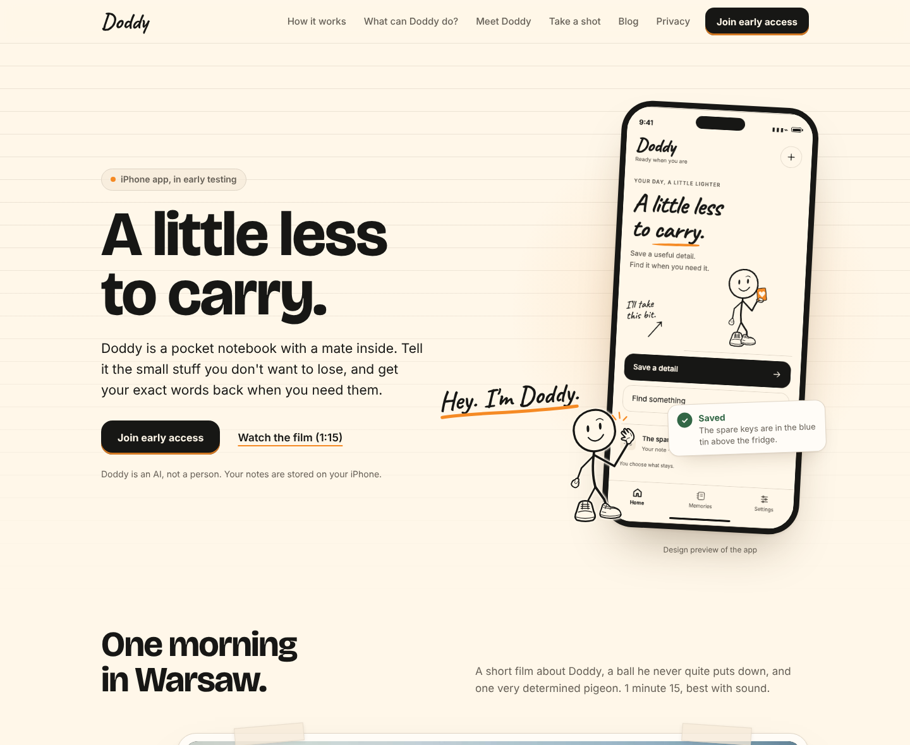<figcaption><b>Desktop, 1440 px.</b> Six links fit at the site's current spacing.</figcaption></figure>
    </div>
    <div class="shelf phones">
      <figure>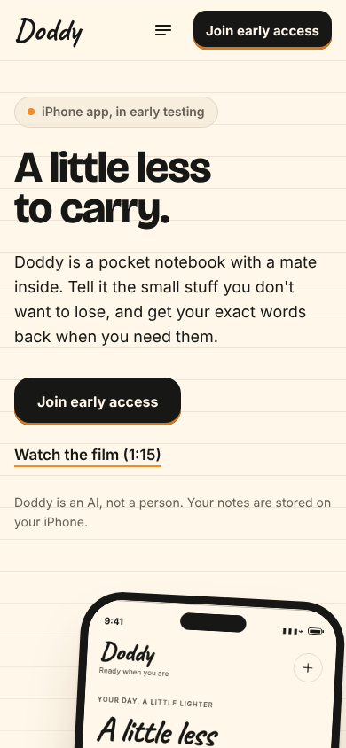<figcaption><b>Phone, 390 px.</b> Wordmark, menu button, button.</figcaption></figure>
      <figure>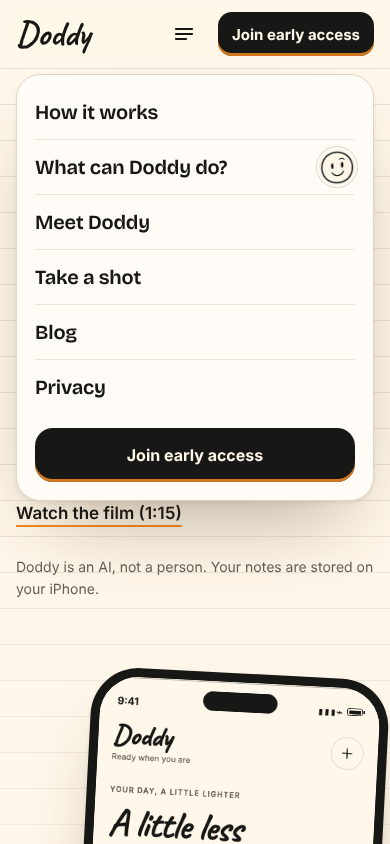<figcaption><b>Menu open.</b> A paper sheet, like the site's cards.</figcaption></figure>
    </div>
  </div>
</section>

<section id="directions">
  <div class="wrap">
    <p class="eyebrow">Mockups 02 · 03 · 04</p>
    <h2>Three directions, one design language</h2>
    <p class="prose muted">Same headline, same tokens, same type. What differs is the shape of the page and what carries it.</p>
    <div class="shelf">
      <figure>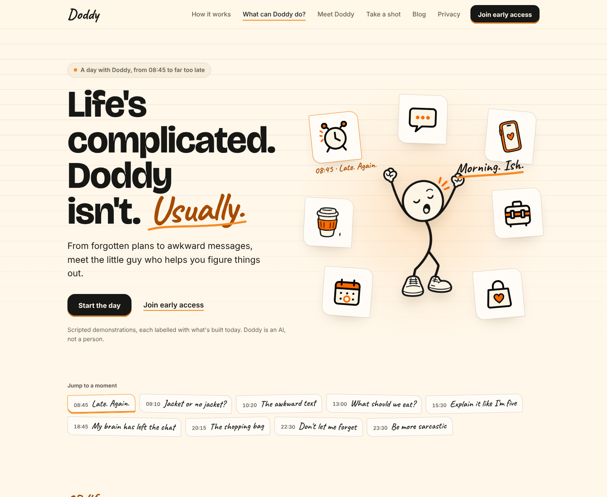<figcaption><b>A · Doddy's daily chaos.</b> A day from 08:45 to far too late. Doddy in a ring of seven objects; the objects are also the chapters. Below, the day strip reuses the film's chapter buttons, and the first moment begins.</figcaption></figure>
      <figure>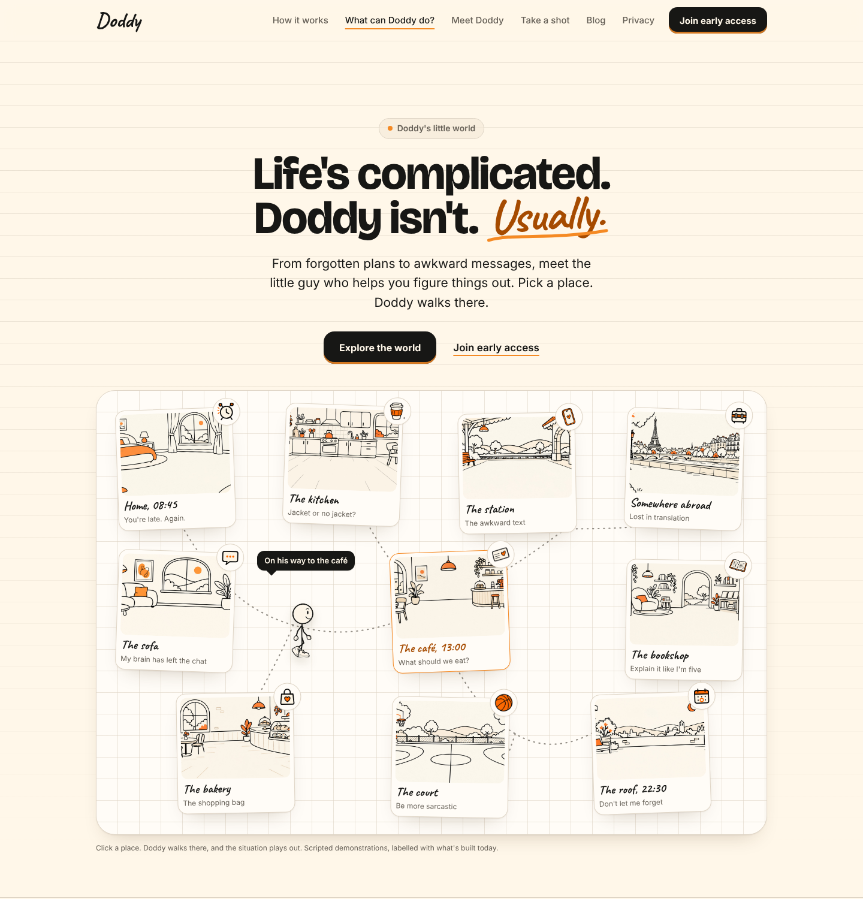<figcaption><b>B · Doddy's little world.</b> A paper map of ten places from the owner's scenery pack. Click a place and Doddy walks there. The most playful, the costliest to build, and the one that loses most on a phone.</figcaption></figure>
      <figure>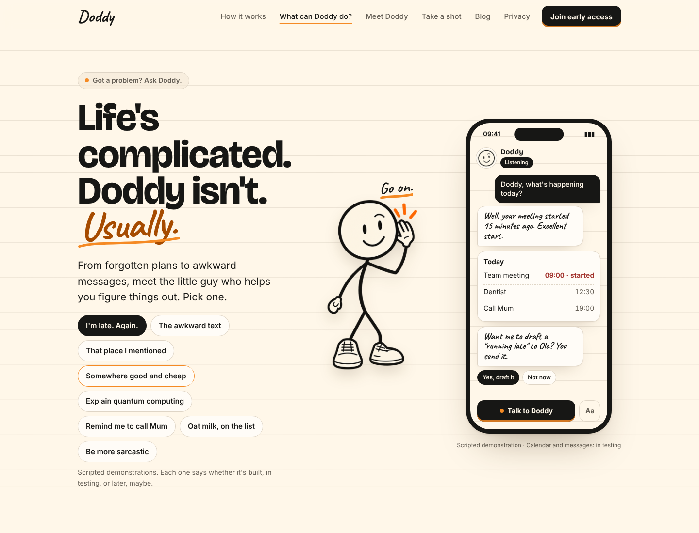<figcaption><b>C · Got a problem? Ask Doddy.</b> One screen: problem chips, Doddy listening, the conversation in an iPhone. Fastest to understand, least to remember.</figcaption></figure>
    </div>
    <div class="shelf three">
      <figure>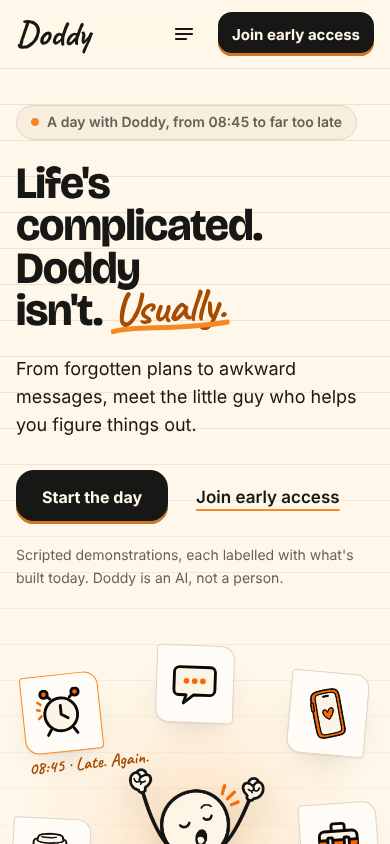<figcaption><b>A on a phone.</b></figcaption></figure>
      <figure>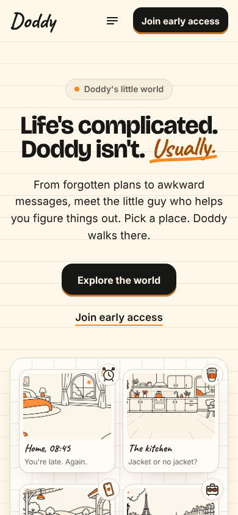<figcaption><b>B on a phone.</b> The map becomes a grid.</figcaption></figure>
      <figure>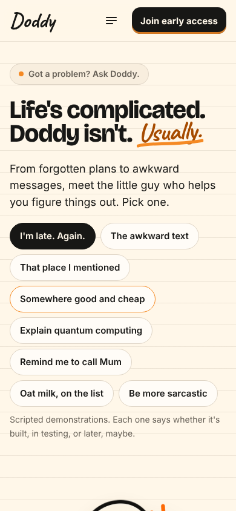<figcaption><b>C on a phone.</b></figcaption></figure>
    </div>
  </div>
</section>

<section id="verdict">
  <div class="wrap">
    <p class="eyebrow">Review</p>
    <h2>Recommendation: Direction A, borrowing from C and B</h2>
    <div class="verdict">
      <div>
        <h3>Why A</h3>
        <ul>
          <li><b>Instant understanding.</b> Headline, Doddy and seven everyday objects are on screen together; nobody has to explore before they get it.</li>
          <li><b>It is the same notebook.</b> Taped paper cards, handwritten asides, chapter buttons, pills and panels are all the homepage's own components. The page reads as the next page, not a microsite.</li>
          <li><b>Phones first.</b> Visitors arrive from TikTok and Instagram. A vertical story stacks; a map does not.</li>
          <li><b>Shareable in pieces.</b> Ten small scenes with lines to screenshot. "The 08:45 one is me."</li>
          <li><b>Honesty fits.</b> One label and one caption per moment; the one built feature gets the anchor scene.</li>
        </ul>
      </div>
      <div>
        <h3>What it borrows, and what it costs</h3>
        <ul>
          <li>From C: the object ring is a problem picker, so the impatient can jump straight to a moment.</li>
          <li>From B: the places become the scene backdrops, so the little world exists without the map's build cost.</li>
          <li>Cost: a long page (ten moments; six can ship first), a little scroll logic for the current chapter and Doddy's travel, all progressive enhancement over a plain page.</li>
          <li>Risk: the humour lives in the copy, which needs the owner's ear before build.</li>
        </ul>
      </div>
    </div>
    <div class="tablewrap">
      <table>
        <thead><tr><th>Criterion</th><th>A · Daily chaos</th><th>B · Little world</th><th>C · Ask Doddy</th></tr></thead>
        <tbody>
          <tr><td>Understood in 10 s</td><td>yes</td><td>after a click</td><td>yes, fastest</td></tr>
          <tr><td>Relatable usefulness</td><td>ten moments, each with the app's card</td><td>ten places, each a click away</td><td>eight chips, one phone</td></tr>
          <tr><td>Memorable personality</td><td>Doddy travels the page, a line per scene</td><td>Doddy walks the map</td><td>one pose, one line</td></tr>
          <tr><td>Continuity with doddy.lol</td><td>reuses every homepage component</td><td>new surface (a map)</td><td>fine, generic</td></tr>
          <tr><td>Shareability</td><td>scenes and lines</td><td>the map as a whole</td><td>low</td></tr>
          <tr><td>Phone</td><td>stacks naturally</td><td>loses the idea</td><td>good</td></tr>
          <tr><td>Build cost</td><td>medium</td><td>high</td><td>low</td></tr>
        </tbody>
      </table>
    </div>
  </div>
</section>

<section id="page">
  <div class="wrap">
    <p class="eyebrow">Mockups 05 · 10</p>
    <h2>The full page, desktop and phone</h2>
    <p class="prose muted">Ten moments from 08:45 to 23:30, Doddy walking between them, a "What's real today" panel, and the join panel. Each scene: the owner's scenery, a pose from the pack, what you said, what Doddy said, and the card the app would show. Scroll inside each frame.</p>
    <div class="shelf two">
      <figure class="tall" tabindex="0"></figure>
      <figure class="tall" tabindex="0" style="max-width: 420px"></figure>
    </div>
    <p class="muted" style="margin-top: 12px; font-size: .875rem">Desktop 1440 × 10399. Phone 390 × 14930. On phones each scene becomes a short stack: the scene with Doddy's line, then your question, then the app's card.</p>
  </div>
</section>

<section id="interaction">
  <div class="wrap">
    <p class="eyebrow">Mockups 06 · 07</p>
    <h2>Picking a scenario, and one scenario opened</h2>
    <div class="shelf">
      <figure>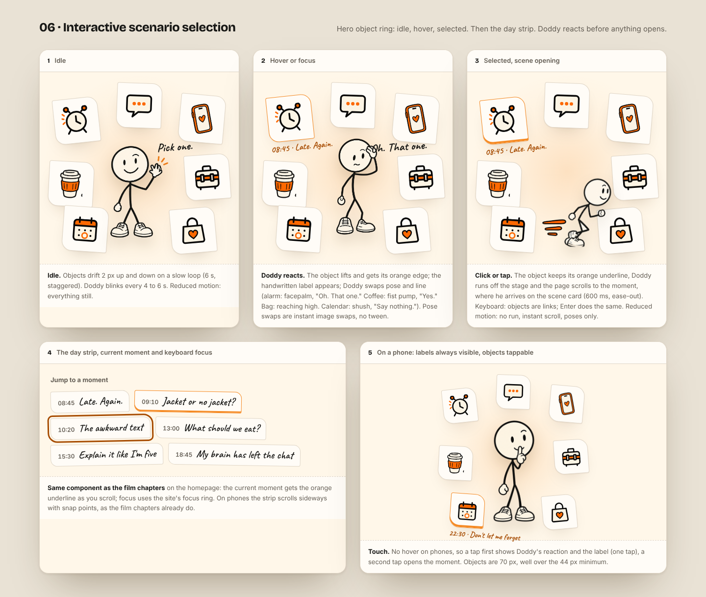<figcaption><b>Idle, hover, selected.</b> Doddy reacts before anything opens: the object lifts, its handwritten label appears, Doddy swaps pose and line. Click, and he runs off to the moment. Reduced motion: no run, instant scroll.</figcaption></figure>
      <figure>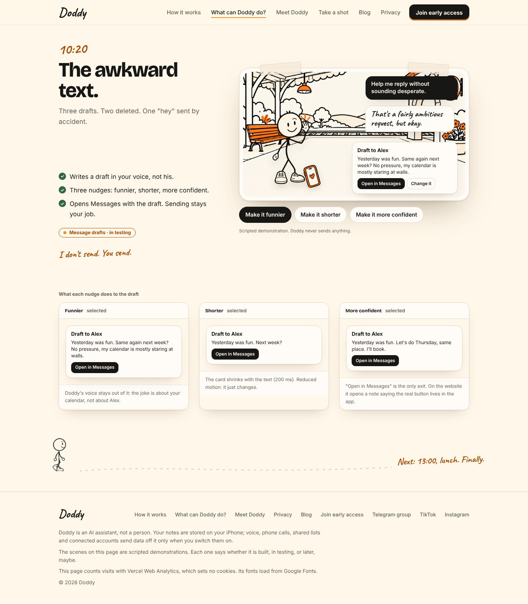<figcaption><b>10:20 · The awkward text.</b> Three nudges change the draft; "Open in Messages" is the only exit, because Doddy never sends.</figcaption></figure>
    </div>
  </div>
</section>

<section id="doddy">
  <div class="wrap">
    <p class="eyebrow">Mockup 08</p>
    <h2>Doddy's interaction states</h2>
    <div class="shelf">
      <figure>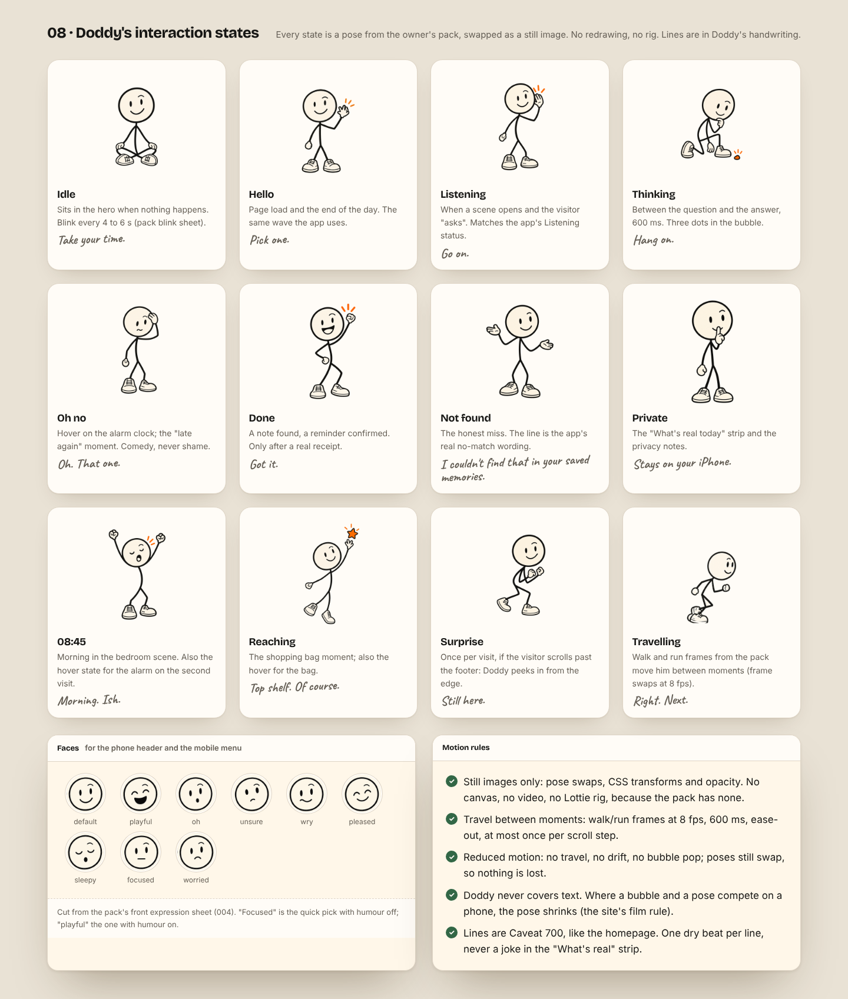<figcaption><b>Twelve states, all from the owner's pack.</b> Still images swapped, no rig. The "Not found" line is the app's real wording. Faces cut from the expression sheet serve the phone header and the menu.</figcaption></figure>
    </div>
  </div>
</section>

<section id="phone">
  <div class="wrap">
    <p class="eyebrow">Mockup 09</p>
    <h2>On the iPhone</h2>
    <div class="shelf">
      <figure>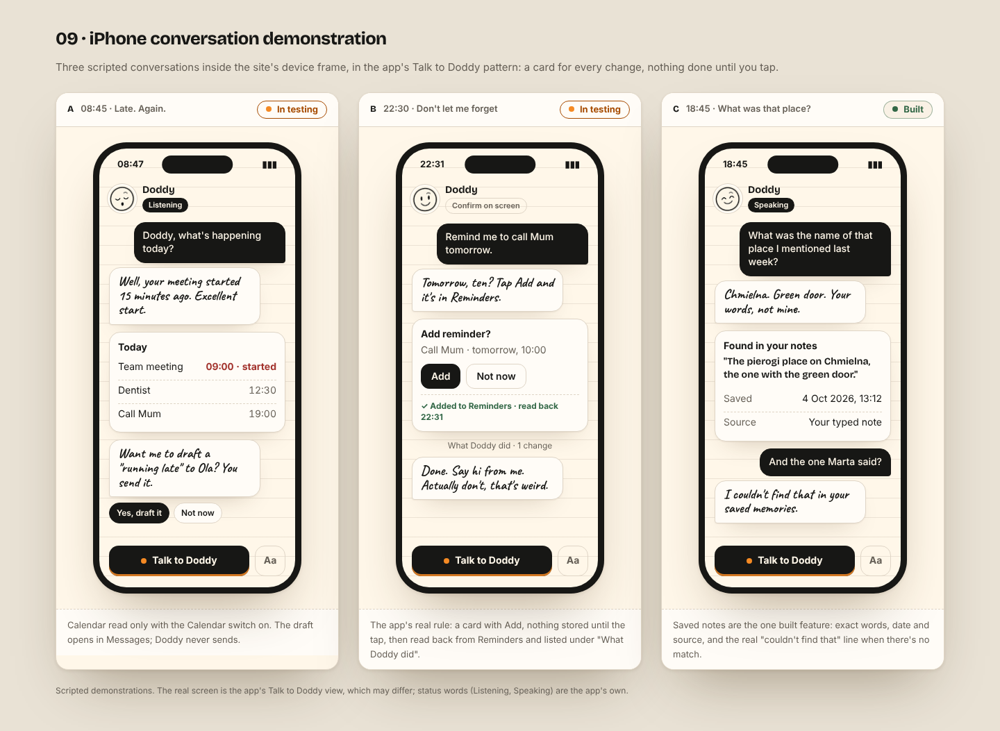<figcaption><b>Three scripted conversations</b> in the app's pattern: a card for every change, nothing done until you tap, a receipt read back. Only the third one, saved notes, is <span class="cap built">built</span>; the others are <span class="cap testing">in testing</span>.</figcaption></figure>
    </div>
  </div>
</section>

<section id="transitions">
  <div class="wrap">
    <p class="eyebrow">Mockup 11</p>
    <h2>Navigation and transitions</h2>
    <div class="shelf">
      <figure>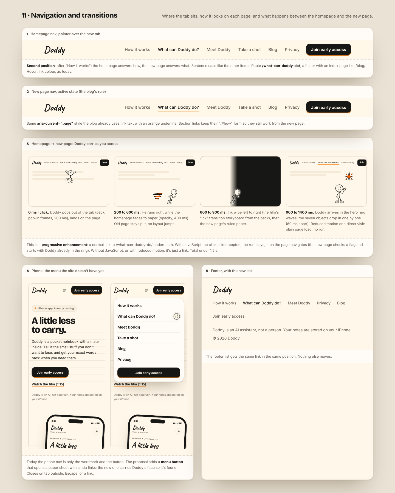<figcaption><b>Hover, active, the crossing, the phone menu, the footer.</b> Route <code>/what-can-doddy-do/</code>, active state borrowed from the blog. The crossing is a progressive enhancement over a plain link, under 1.5 s, skipped with reduced motion.</figcaption></figure>
    </div>
  </div>
</section>

<section id="cta">
  <div class="wrap">
    <p class="eyebrow">Mockup 12</p>
    <h2>The final ask and the footer</h2>
    <div class="shelf">
      <figure>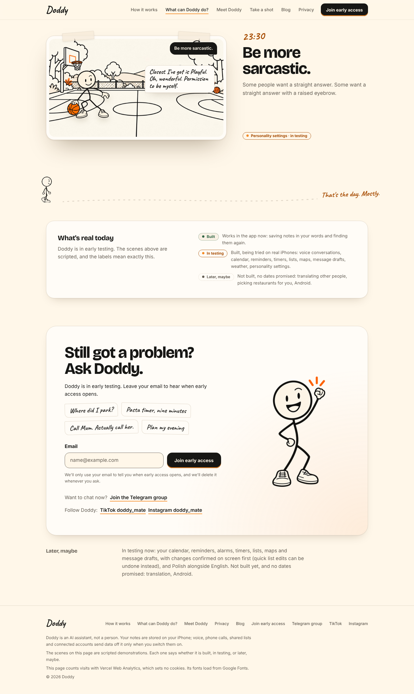<figcaption><b>"Still got a problem? Ask Doddy."</b> The site's own join panel and waitlist form, more problems as scraps, the "Later, maybe" block, and the footer with the new link.</figcaption></figure>
    </div>
  </div>
</section>

<section id="truth">
  <div class="wrap">
    <p class="eyebrow">Product accuracy</p>
    <h2>What's real, and how the page says it</h2>
    <div class="tablewrap">
      <table>
        <thead><tr><th>Label on the page</th><th>Means</th><th>Scenes</th></tr></thead>
        <tbody>
          <tr><td><span class="cap built">Built</span></td><td>Works in the app now: a note saved in your words, found again with date and source; "I couldn't find that" when there's no match.</td><td>18:45 My brain has left the chat; phone C</td></tr>
          <tr><td><span class="cap testing">In testing</span></td><td>Built, being tried on real iPhones: voice conversation, calendar, reminders, timers, lists, Apple Maps hand-off, message drafts, weather, Wikipedia look-ups, English/Polish, personality settings. Every change goes through a card you tap.</td><td>08:45, 09:10, 10:20, 13:00, 15:30, 20:15, 22:30, 23:30; phones A and B</td></tr>
          <tr><td><span class="cap later">Later, maybe</span></td><td>Not built, no dates: translating other people, picking a restaurant for you, Android.</td><td>Lost in translation, shown as a concept</td></tr>
        </tbody>
      </table>
    </div>
    <p class="muted" style="margin-top: 14px">Every scene is captioned "scripted demonstration". No ratings, downloads, testimonials or App Store buttons. The artwork is the owner's pack only (poses, scenery, props, effects and faces, cut and downscaled, nothing redrawn); five everyday objects the pack lacks are drawn as line art in the props sheet's ink, cream and orange, and are easy to swap for the illustrator's.</p>
  </div>
</section>

<section id="decisions">
  <div class="wrap">
    <p class="eyebrow">Phase 5</p>
    <h2>Stopped here. Decisions needed before anything is coded.</h2>
    <ol class="decisions">
      <li>Direction: A as recommended, B, C, or a different mix.</li>
      <li>Tab label ("What can Doddy do?" or "Life with Doddy"), position, and the route <code>/what-can-doddy-do/</code>.</li>
      <li>Add the phone menu, or keep the phone nav as it is today.</li>
      <li>Which moments ship first (suggested six: 08:45, 10:20, 18:45, 22:30, 13:00, 23:30), and a pass on Doddy's lines.</li>
      <li>Whether the pack's scenery and poses may be used as final web art, and whether the five drawn objects should come from the illustrator.</li>
      <li>Keep "Lost in translation" as a labelled concept, or cut it.</li>
      <li>The homepage-to-page crossing: keep, simplify to a fade, or none.</li>
    </ol>
    <div class="stop prose">
      <p style="margin:0"><b>Not done, on purpose:</b> no page under <code>site/</code>, no nav change on the live site, no JavaScript for the interactions, no deployment. The sources, the renders and the full write-up live in the repository at <code>design/website-what-can-doddy-do/</code>.</p>
    </div>
  </div>
</section>
